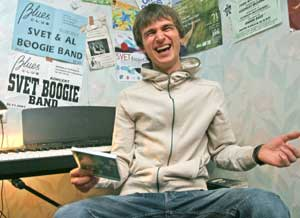

29 сентября минские блюзмены Svet Boogie Band презентовали в Москве новый альбом Nothing But Love. Устроить презентацию на родине пока не получается, но музыканты надеются на лучшее: "Вернемся и обязательно устроим концерт". Трогательная наивность: они на самом деле играют музыку, "чтобы радовать людей". Только блюзовые музыканты могут разрисовать обложку альбома совокупляющимися зайчиками.Белорусский блюз - явление уникальное. Более десяти лет действующий "Стар-Клуб", ведомый одним из зачинателей белорусского рок-н-ролла Геннадием Стариковым, когда-то являвшийся едва ли не андеграундной "фабрикой звезд", теперь собирается раз в три недели, а то и реже. Группа Mojo Blues прочно обосновалась в китайских пабах, а "Крама", квинтэссенция ассимилированного к местным реалиям блюза, не имеет возможности выступать так часто, как хотелось бы.
На фоне этого бурная блюз-деятельность Светослава Ходоновича и его шумного "буги-бэнда" представляется чем-то уникальным. За два года Svet Boogie Band получили гран-при международного блюз-фестиваля Noc Bluesowa (Польша), выступили в десятках польских, российских и европейских клубах, приняли участие в заметных российских блюз-фестивалях и выпустили три альбома (не считая "живого" DVD и полуподпольных концертных записей).
Сам Свет, в свои 25 лет похожий на наивного школьника-подростка, утверждает, что быть музыкантом в Беларуси - не так уж плохо. Он общается исключительно в эпическом жанре "истории" ("послушай, вот еще история") и почти всегда улыбается. И никакой свойственной творческому человеку депрессивной смури: выходит, что иногда блюз - это когда хорошему человеку хорошо.
БЛЮЗ С МЯДЕЛЬСКИМИ КОРНЯМИ
"Мама старалась воспитать меня талантливым и интеллигентным, - рассказывает Свет. - Я играл на форпепиано, аккордеоне, слушал музыку, а мама в это время писала книжки в духе "Как воспитать гениального ребенка". Как-то в детстве я поймал странную радиопередачу, где какой-то мужчина гнусавым голосом вещал о том, как "Сонни Бой Уильямсон записал свой второй альбом". Я никогда не знал, что это блюз, что оно вообще как-то называется, для меня это все было альтернативой "Ласковому маю", который тогда слушали все".
Всерьез заниматься блюзом начинающий врач-стоматолог начал во время длительного профессионального заточения в Мяделе, где он жил на окраине леса и, распевая ошарашенным бабушкам песни Джона Ли Хукера, старательно высверливал им кариозные полости: "Целый год я жил один, у меня была тяжелая работа, у меня не было ни женщин, ни музыки. Иначе говоря, все темы, необходимые для блюза, в жизни присутствовали. И когда я наткнулся на диск Джона Ли Хукера Chill Out, то подумал: почему бы и нет? С блюзом всегда так: тебя зацепило - и все, блюз взял тебя".
Гитариста Алексея он нашел благодаря объявлению в газете. Так образовался акустический дуэт Svet&Al: Эл играл на слайд-гитаре тягучие потусторонние риффы, а Свет пыхтел в губную гармошку и пел диким голосом негритянские песни. Именно в таком составе начинающие музыканты оказались победителями польского фестиваля.
Теперь Свет - далеко не новичок, однако к блюзу у него по-прежнему трепетное отношение: "За весь мой опыт концертного гастролирования, среди людей, любящих блюз, я не встретил ни одного человека, который бы показался мне агрессивным или мрачным. Блюз не может существовать вне любви!"
"ЕСЛИ ЧЕЛОВЕК СИЛЬНЫЙ - ОН САМ СЕБЕ ПОМОЩНИК"
"После первого московского концерта к нам подошел какой-то большой мужчина и сказал: "Ребята! Мне так понравилось!" Так мы познакомились со своим первым директором. Или еще история. Когда я был стоматологом и блюз для меня являлся хобби, мы с Алексеем решили шутки ради сделать сайт: написали там координаты, вывесили пару песенок. Через пару дней - звонок: "Меня интересует акустический дуэт Svet&Al". Я говорю: "Так перезвоните на домашний!" А он мне: "Мне все равно, я звоню из Владимира". Для меня Владимир тогда был городом на краю света, а теперь я крестный папа сына звонившего мне Алексея Макарова из группы Blackmailers Blues Band, которую я уже два раза привозил в Минск".
Свет задумывается: "Во-первых, в блюзе ты всегда играешь известные композиции. Это на новом альбоме мы играем только свои песни. Это целая культура - блюзовые концерты, куда народ ходит общаться, тусоваться, обсуждать диски. У блюза более широкие рамки, чем у поп-музыки. Это не музыкальное направление, а отдельный срез культуры. Если в Штатах все зарождалось среди буквально сотни человек, простых и неграмотных черных ребят, то в Советском Союзе джаз и блюз всегда являлись музыкой элитной, для инженеров, преподавателей и т.п. Поэтому в нашей стране и в России блюз исторически считается музыкой для интеллигентных, тонких, ценящих свое время людей".
Имидж блюза привлекает еще и спонсоров. Свет не любит об этом говорить, потому как, судя по всему, он большой романтик: "Если ты на каждом углу бьешь себя пяткой в грудь и кричишь "Покупайте мою музыку!", успеха не будет. Если музыка поется от души и ты делаешь это исключительно для того, чтобы люди на твоем концерте получили удовольствие, когда-нибудь ты получишь ответ: либо деньги, либо призвание. У меня есть друзья, которые мне помогают, у нас много концертов, мы дружим с директорами многих клубов, и у меня есть работа. И я счастлив, что полтора года я живу только блюзом".
Свет вначале ругается, что в белорусских магазинах "все ботинки - одинаковые", но потом добавляет: "Но ведь это так удобно! Человек хочет купить себе ботинки, но в магазине не оказалось нужного размера, тогда он пойдет в соседний магазин и купит то, что ему нужно! И вообще, любой человек в любой стране и при любом режиме может быть счастлив. Все зависит от его мировоззрения и мировосприятия. Хочешь быть счастливым - будь им. Хочешь быть свободным - ты уже свободен. Не верю, что кто-то будет хватать меня за руки и кричать: "Не пой блюз!" или "Сьпявай на беларускай мове!". Я бы очень хотел записать альбом на белорусском, но я до восьмого класса жил в России и не очень хорошо знаю язык".
БЕЛОРУССКИЙ БЛЮЗ - 35-Е НАПРАВЛЕНИЕ
"Когда мы выступали в Варшаве, нас спрашивали: вот вы поете на английском и являетесь при этом детьми Беларуси, как так можно? Я обычно отвечал: "Ну да, я живу здесь, а музыкальный язык универсален - блюз можно спеть и на русском, и на белорусском". В блюзе ведь исторически существует тридцать четыре направления, старательно расписанных музыкальными критиками".
Судя по всему, Свет запросто может придать белорусскому блюзу статус 35-го направления: "Да, я считаю, что мы - блюз из Беларуси. И даже если мы играем интернациональный вариант блюза, он все равно не может не выделяться. Мы видим одно небо, живем в одинаковых домах, ходим по одним и тем же улицам, катаемся в троллейбусах и едим белорусскую пищу. Поэтому мы наверняка поем блюз не так, как, допустим, во Франции".
Скорее всего, белорусские музыканты интересны в Европе не только с точки зрения творчества, однако Света это не очень трогает: "Да, когда мы выступаем в Европе, некоторые говорят нам: "диктатура", "режим"… Но это все ерунда. Просто, чтобы жить тут, нужно терпение… И никакого "сиротского имиджа": на фестивале во Франции нас называли самыми стильными и красивыми музыкантами. Видимо, мы все-таки представляем нашу страну в позитивном и интеллигентном ключе, и мне это очень приятно. Мы не делаем "шоу обезьян", а поем красивые песни о любви, выступаем в классической блюзовой одежде: в пиджаках, галстуках и начищенных ботинках".
Свет совершенно спокойно относится к политике ("Ею занимаются политики. Я занимаюсь музыкой"), однако во время обострения белорусско-польского конфликта, когда Svet Boogie Band выступали в Варшаве, он не выдержал и начал вещать со сцены что-то в духе: "Мы такие же, как и вы! Долой границы!"
"Если бы я куда-нибудь их за собой повел, они бы пошли куда угодно! Но это связано только с музыкой!" - признается он.